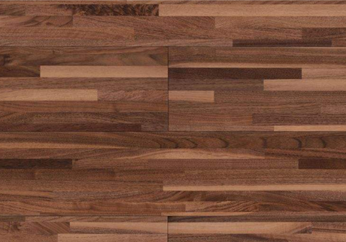
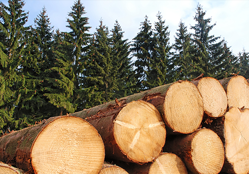

精湛的工艺，
成就一个个精品。
木门的工艺要求十分考究，必须通过多个环节、多道工序加工而成。每一个加工工艺都十分重要，决定着木门的美观、实用寿命和价格。据专家测算：“原木门工艺不同，费用差异将达到8倍以上。”
品种选择
开裂问题
木材烘干
油漆工艺
雕刻工艺
原木门
原木门指外在材质和内在材质完全统一的木门，泛指所有具有此特点的各种类型的木门，包括原木制作的半截玻璃门和玻璃门等。作为室内效果最具表现力因素的装饰木门，它的选择与搭配，可以说是家居过程中的“画龙点睛”之笔，越来越受到消费者的青睐。
设计理念
在对木门进行初步设计时，应遵循环保性、使用性、装饰性、经 济性以及便捷性等五大设计原则。
环保性
环保性
环保性
环保性
环保性
环保性
选择绿色环保无污染的原辅材料和合适的加工工艺。材料的含水率要与当地平衡含水率相适宜，不宜选用含水率较高的原辅材料，因为，其他条件相同时，材料的含水率越高，甲醛等有害物质的释放速度越快。
环保性
选择绿色环保无污染的原辅材料和合适的加工工艺。材料的含水率要与当地平衡含水率相适宜，不宜选用含水率较高的原辅材料，因为，其他条件相同时，材料的含水率越高，甲醛等有害物质的释放速度越快。
环保性
选择绿色环保无污染的原辅材料和合适的加工工艺。材料的含水率要与当地平衡含水率相适宜，不宜选用含水率较高的原辅材料，因为，其他条件相同时，材料的含水率越高，甲醛等有害物质的释放速度越快。
环保性
选择绿色环保无污染的原辅材料和合适的加工工艺。材料的含水率要与当地平衡含水率相适宜，不宜选用含水率较高的原辅材料，因为，其他条件相同时，材料的含水率越高，甲醛等有害物质的释放速度越快。
环保性
选择绿色环保无污染的原辅材料和合适的加工工艺。材料的含水率要与当地平衡含水率相适宜，不宜选用含水率较高的原辅材料，因为，其他条件相同时，材料的含水率越高，甲醛等有害物质的释放速度越快。
在门的种类当中，原木门是一种比较健康环保的门类，因其具有独特的外观、超强的隔音效果以及清晰的纹
理特点而受到了消费者的欢迎。如果要选择原木门，就要充分了解它，知道它各个优点，正确的选择原木门，才能对得起它的价格。
纹理清晰
不变形耐腐蚀
天然环保
最强隔音
木纹纹理清晰，有很强的整体感和立体感。时下比较流行的材质大致有榆木、红松、扎木、楸木、水曲柳、榉木等，因此木纹纹理清晰。
经过加工后的成品门具有不变形、耐腐蚀、无拼接缝及隔热保温等特点。
原木门使用的粘合剂比实木门用量减少近50%，因而好的原木门甲醛释放量远远低于国家标准。
在种类繁多的门式样中，原木门的隔音效果最好。因为它的密度性高，重量沉且门板厚。
不是什么木材都可以制作原木门的，有其特殊材质要求。每种材质的优点特征都是不同的，因此供消费者选择的范围也比较大。
花梨木
材质坚硬，适合用来做大门，纹理交错结构均匀，光泽度高切面光滑，涂饰、胶合性好。好的花梨木呈深红色，纹理类似羽毛状，给人以华丽、高贵的感觉，是原木门的首选。
黑胡桃
刨面光滑，耐腐蚀，带有轻微的味道，结构粗而均匀，纹理交错或直通，适用于高级家具。黑胡桃拥有良好的抗震性能，不宜弯曲翘起，不少原木门都是由黑胡桃制成。
枫木
切面较为特别，常见“雀眼”图案，纹理直通结构细腻而均匀，耐腐蚀能力极强。染色以及抛光后能够获得好看的“雀眼”表面图案，拥有较高的欣赏价值，是现在较为流行的原木门用材。
柚木
具有天然的金色光泽，带有一点皮革味，切面尤为光滑。干燥性能好，油漆和胶黏性能好，适用于高档家具，用来做原木门再合适不过，能够轻松营造尊贵的氛围，深受广大消费者的喜爱。

红橡木
纹理是山形，表面触感良好，质地坚硬结构十分牢固，用以做原木门，使用年限会相对比较长。适合做成欧式风格的原木门，几乎不吸水，很有档次，是家居装饰常见的一种材料。
楸木
楸树木材质地坚韧、软硬适中,具有不翘裂、不变形、无异味、易加工、易干燥、易雕刻、绝缘性能好,是广泛应用于建筑、家具、造船、雕刻、乐器、工艺、军工等方面的优质良材。

木门的工艺要求十分考究，必须通过多个环节、多道工序加工而成。每一个加工工艺都十分重要，决定着木门的美观、实用寿命和价格。据专家测算：“原木门工艺不同，费用差异将达到8倍以上。”
品种选择
开裂问题
木材烘干
油漆工艺
雕刻工艺
品种选择
木材的选择须综合考虑它的内在干缩性、抗蛀虫抗腐 蚀性以及它的密度和天然翘曲性。
开裂问题
为避免因为热胀冷缩导致木门在使用一段时间后会有裂痕，所以使用分体拼装工艺：即木工完成后，先进行多遍油漆再拼装最后喷上保护面漆。

木材烘干
木材的含水率是决定木材开裂变形的决定性因素。因而在原木门的制作中首先要严格控制好木材的干燥工序，根据每个省份的空气科学地控制木材含水率，使其达到各地的地区标准。
油漆工艺
油漆工艺是木门优劣指标的第一影响因素。例如在同等的日照条件下，耐黄性好的亮光白面漆比普通白面漆的保色性好；在同等漆膜外观下，耐磨哑光漆的耐磨性与抗刮伤性就比普通哑光漆要好很多。
雕刻工艺
原木门雕刻分机雕和人手雕，如果选择用机雕局部花板，花边采用小碎料雕好后再用胶水和钉子装上。这类雕刻工艺看起来既不精细，也显死板，而且时间长会有松动。而一套像样的纯手工雕花门，雕功好，寿命长，且具有很高的文化艺术内涵。
豪利原木门囊括了各种类型的木门，例如单开门、对开门、子母门、玻璃门、推拉门及门套，满足众多消费者的选择需求。
单开门
对开门
子母门
玻璃门
推拉门

门套
在为客户服务过程中，一套完善的、专业的服务流程会直接影响制造品的质量好坏与服务效率的快慢，完善的服务流程将会极大提高我们的专业执行力与制造力。
初步交涉

上门测量
签订订单
设计木门
生产制作
上门安装